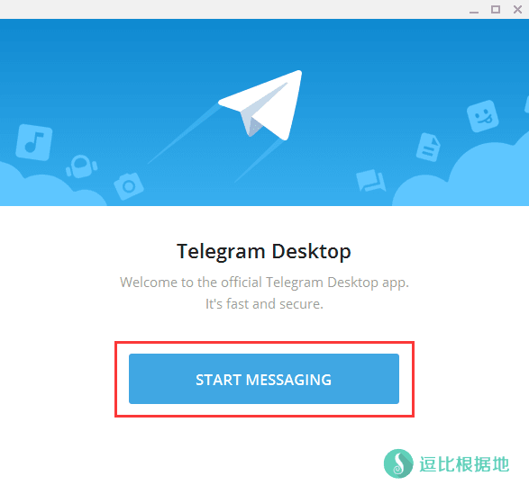
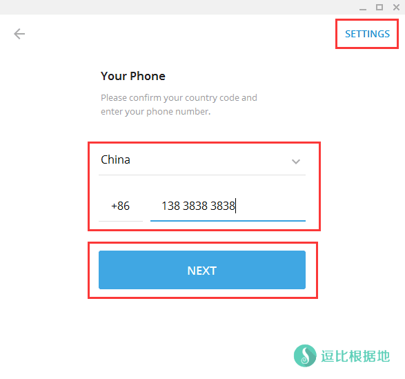
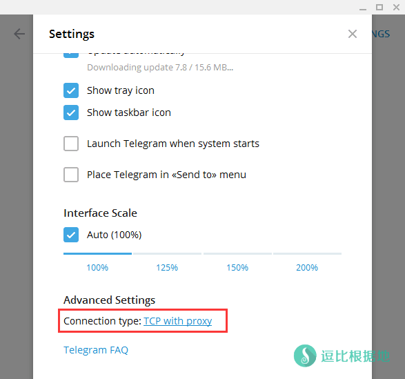
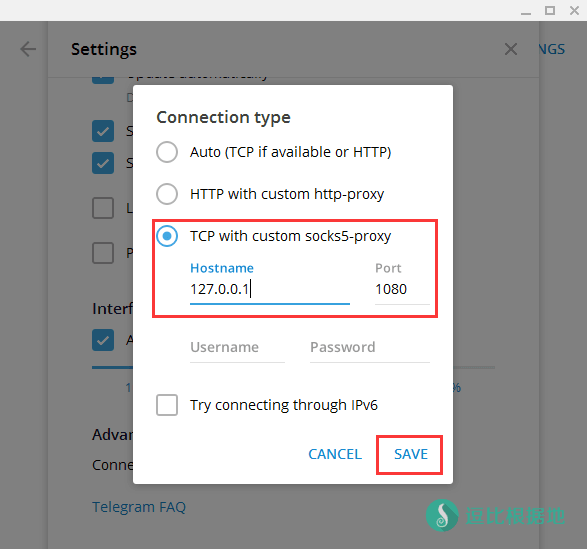
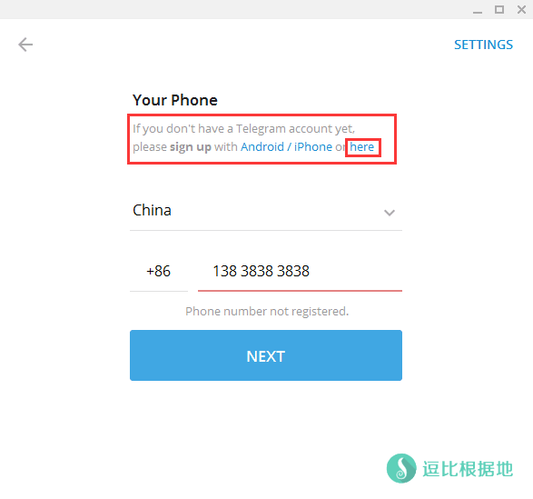
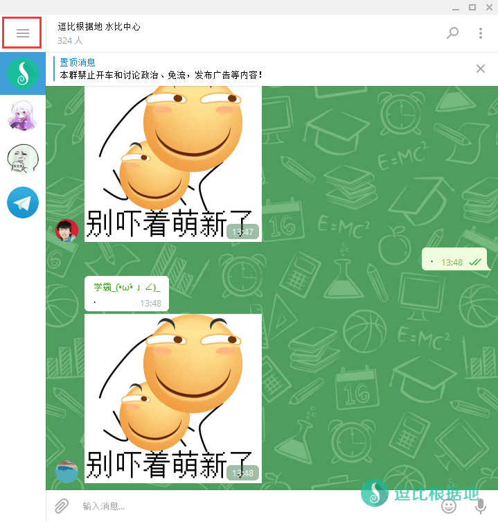
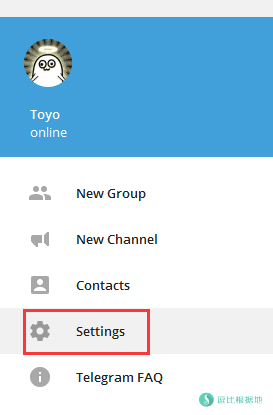
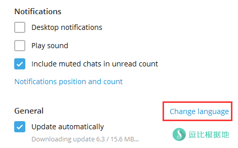

国内的聊天软件审核越来越严格了，我的逗比根据地一群前几天都让封了，所以我现在开始研究Telegram了，很多人不会使用它，而且默认也没有中文语言，所以一些人想让我写个教程，于是我就写个教程吧，只是简单的入门使用教程。
本文章只介绍PC 客户端 最基本的使用，载入汉化文件后都是中文大家也能看懂了：下载/安装 - 注册/登录 - 设置代理 - 载入汉化文件
其他平台的客户端都是大同小异。
最近发现很多人 无法主动私聊别人 ，特此解释一下：
该限制几个月以前是没有的。
前段时间因为一些币圈(挖矿)的人大量使用 +86 手机号注册的机器人群发广告，导致被大量投诉。
因为投诉太多，所以 Telegram 干脆对所有+86手机号注册的账号进行了限制：
无法对非+86的用户主动发起私聊（会提示必须是双向联系人），+86用户之间可以正常私聊。
如果该限制对你影响很大，那么请找一些虚拟号码然后在 个人信息中点击你的手机号码 - 更改手机号码 即可。
该操作不会有任何影响。
至于虚拟号码，可以考虑： Google Voice 之类的（撸不来就去淘宝买）
非 +86 手机号的用户可以随意发起主动私聊(除非被对方屏蔽)。
欢迎加入社群：
逗比根据地 社群：https://t.me/doubi
逗比根据地 频道：https://t.me/doubi_a
Telegram简单介绍
Telegram Messenger 是一个跨平台的实时通讯应用，它的客户端是自由及开放源代码应用，但是它的服务器是专有应用。
用户可以相互交换加密与自析构的消息，以及照片、影片、文件，支持所有的文件类型。
官方网站有正式发布 Android、iOS、Mac OS X 与 正在 Beta 的 Windows Phone 的版本。
Telegram官方网站：https://telegram.org/
简单的说就是一个安全的纯粹通讯聊天软件。正是因为不受国家监管，所以服务器和官网都被墙了，使用这个软件需要挂代理。
Telegram使用方法
下载/安装
Telegram目前有 PC(Desktop)、Android、iOS、Mac OS X 、WP 和 Web网页客户端。
我的 逗比云 上面有 Android 客户端，其他客户端请去官网下载。
注册/登录
安装并运行Telegram PC(Desktop)后，会出现如下界面，点击 START MESSAGING 按钮继续。

注意：Telegram如果希望保护隐私，可以用虚拟手机号，别人除非加你好友，否则是无法看到手机号的。
然后就会让你输入你的 手机号，不过因为 Telegram的服务器被墙了，所以需要先设置代理才能 注册/登录。
设置代理
点击右上角的 SETTINGS 按钮，然后就会出现设置页面，翻到最下面，找到 Connection type: TCP with proxy。
点击 TCP with proxy 就会出现代理设置选项。
选择 TCP with custom socks5-proxy ，并输入 Hostname: 127.0.0.1 ，Port: 1080 （SS客户端本地端口，默认1080），然后点击 SAVE 按钮保存。
然后关闭 设置页面，继续我们一开始的步骤，选择国家并输入你的手机号，然后点击 NEXT 按钮继续。



Telegram会检测你的手机号是否已经注册，如果已经注册会发送短信验证码让你登录，如果没有注册会提示你在 Android/iPhone 客户端或者 here 中注册。
点击 here ，会给你发送 短信验证码，如果2分钟没有收到，就会拨打电话语音通知，但是中国手机号是 粤语语音，听不懂...

验证手机号后，会提示输入你的 名字(First Name)和 姓氏(Last Name)，以及上传头像，填写完后点击 SIGN UP 按钮继续。
到这里，我们就完成了 下载/安装 - 注册/登录 - 设置代理 了，接下来教你如何载入汉化文件。
载入汉化文件
首先下载汉化文件，可以从我的 逗比云 下载，也可以加入 汉化社群(Telegram-zh_CN Project) 去获取最新汉化文件。
下载 对应客户端的汉化文件到本地后，点击软件左上角的 三个横杠 ，然后选择 Settings 进入设置页面。


翻到中间，按住 Shift+Alt 按键然后去鼠标点击 Change language 就会出现让你选择汉化文件的选择框，选择上面下载的 汉化文件，导入后会提醒你 需要重启客户端才能生效。
重启后，你就会看到语言变成中文了。

转载请超链接注明：逗比根据地 » Telegram 简单入门使用教程
责任声明：本站一切资源仅用作交流学习，请勿用作商业或违法行为！如造成任何后果，本站概不负责！


逗比根据地 社群：https://t.me/doubi